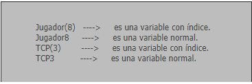
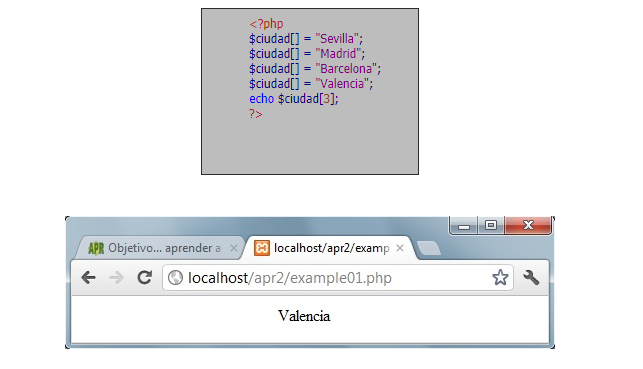
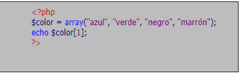

ARRAYS BÁSICOS O TRADICIONALES EN PHP
Un array es un conjunto de variables de una misma clase. Se accede a cada elemento individual del array mediante un número entero denominado índice. 0 es el índice o localizador del primer elemento y n-1 es el índice del último elemento, siendo n la dimensión, tamaño o longitud del array. Así $empleado[23] representaría al empleado con localizador 23 como veremos a continuación.

Los arrays son muy utilizados en la programación. Dependiendo de la cantidad de dimensiones que tengan pueden ser:
- De una dimensión (vectores). Por ejemplo $empleado[23]
- De dos dimensiones (matrices). Por ejemplo $butaca[3, 14]
- De tres o más dimensiones (multidimensionales). Por ejemplo $fecha[2012, 9, 22]
Para acceder a los elementos del array se utilizan los corchetes [], dentro de los cuales existirá un localizador o índice que es un número entero. Además, podemos guardar valores de cualquier tipo de variable (string, entero, punto flotante, booleano) dentro de un array. Por ejemplo $empleado[23] podría tomar como valor $empleado[23] = “Juan Pérez Suárez”. En este caso se trataría de un array de cadenas de texto, es decir, un array de string. En otro caso $empleado[23] podría tomar como valor $empleado[23] = 2312. En este caso se trataría de un array de valores numéricos.
En algunos lenguajes es necesario declarar los arrays antes de poder utilizarlos, pero en PHP no es necesario. Cuando se definen elementos de un array, PHP reconoce automáticamente que se trata de un array sin necesidad de declaración previa.
VECTORES (ARRAYS DE UNA DIMENSIÓN)
Los vectores son los arrays que sólo contienen una dimensión (un índice).
Escribe este código y guárdalo con un nombre de archivo como ejemplo1.php. A continuación, sube el fichero al servidor y visualiza el resultado en tu navegador.

La forma general de uso de un array es: $nombreDeVariableArray [localizador] = valorAsignado;
Ten en cuenta que lo que diferencia a una variable que pertenece a un array (conjunto de variables) es la presencia del corchete con un índice en su interior.

PHP admite también otra posibilidad que no admiten otros lenguajes: se pueden usar arrays sin especificar los números de los índices, ya que PHP los puede colocar automáticamente.
Escribe ahora este otro código y guárdalo con un nombre de archivo como ejemplo2.php. A continuación, sube el fichero al servidor y visualiza el resultado.

Fíjate que PHP ha colocado automáticamente los índices, asignando el 0 a Sevilla, el 1 a Madrid, el 2 a Barcelona y el 3 a Valencia. Hay que recordar que los arrays siempre comienzan numerándose desde cero.
Otra forma de asignar valores a un array vector es la siguiente:

Como ves, esta es una forma abreviada cuya forma general es:
$nombreDelArray = array (valorElemento0, valorElemento1, valorElemento2, … , valorElementon)
El término array es una palabra clave en PHP cuyo significado es equivalente a decir “los elementos que aparecen en la lista a continuación son elementos de un array”.
REF. BIBLIOGRAFICA:
aprender a programar.com (2016). Leer y escribir archivos de texto con PHP. Función fopen (modo), fgets, fputs, fclose y feof. Ejemplo (CU00836B) [Figura]. Recuperado de https://www.aprenderaprogramar.com/index.php?option=com_content&view=article&id=585:leer-y-escribir-archivos-de-texto-con-php-funcion-fopen-modo-fgets-fputs-fclose-y-feof-ejemplo-cu00836b&catid=70&Itemid=193